OUTPUTS PER LESSON
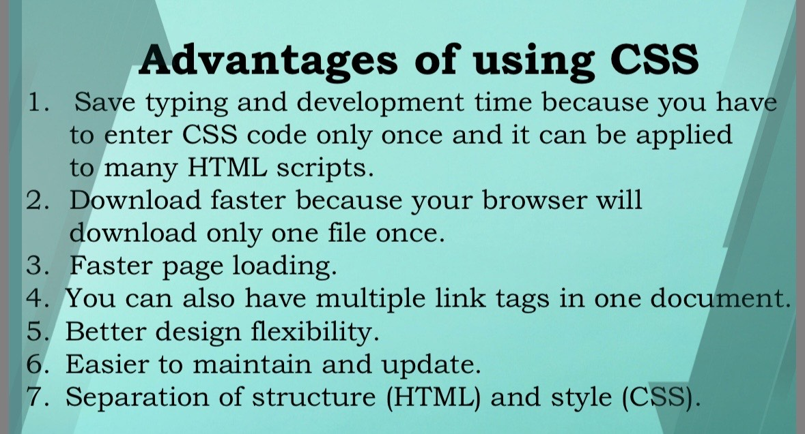
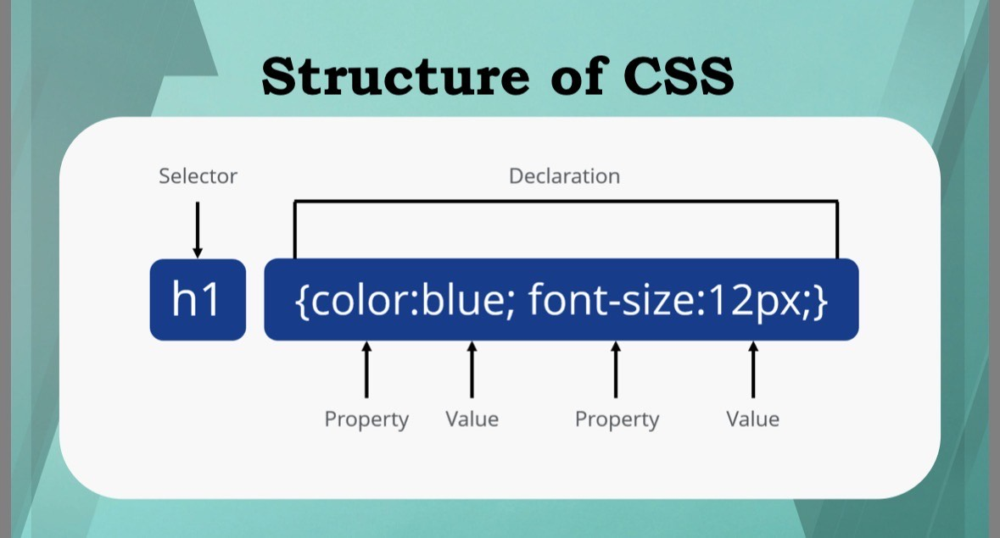
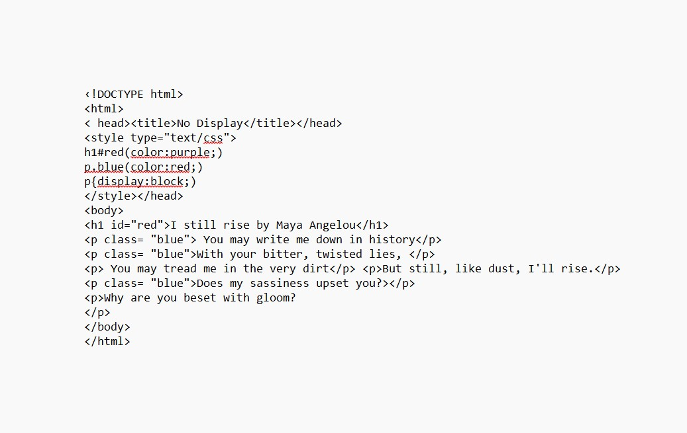
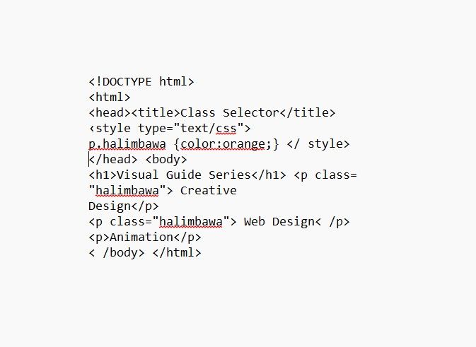
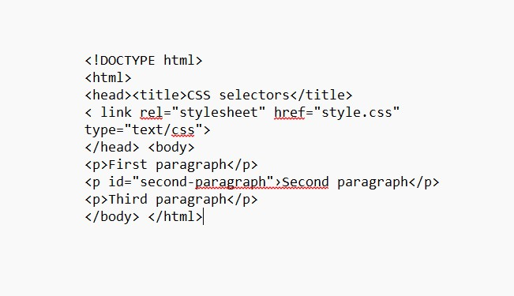
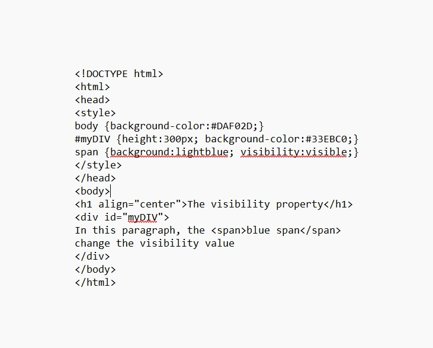
LESSON 1
In our first lesson, we were introduced to CSS, it's importance, and the layers of a webpage: including behavior (JavaScript), content (HTML), presentation (CSS).
LESSON 2
In our second lesson, we learned the structure of CSS, the style sheets, and their parts. We were also taught the 3 kinds of css: inline, embedded and external
LESSON 3
In our 3rd lesson we continued learning about the 3 kinds of CSS, including block level element and inline level element.
LESSON 4
We learned about CSS rule, Style properties, and Classes. We also did coding activities for it.
LESSON 5
We learned the different types of selectors which are: Class selector, Element selector/Tag selector, ID selector, Universal selector, Group selector, Attribute selector
LESSON 6
In our last lesson, we learned about dimensions, their properties, and pseudo-classes with links
REFLECTION
BUWAN NG WIKA: The most important thing I learned from the Buwan ng Wika event is to cherish and love our country's cultures, language and history as it is very unique amongst other countries. I can apply what I learned in my real life situations by doing the cultures such as doing "mano" to elderly, supporting local brands and teaching other people about our history. I actively participated in this event by wearing Filipiniana, showing off how proud I am to be a Filipino. If I were to teach this to my classmate, I would first explain the history of our country, our language and our culture and tell them how beautiful it is. It is important to have the Buwan Ng Wika event to represent our language and culture by doing unique activities.
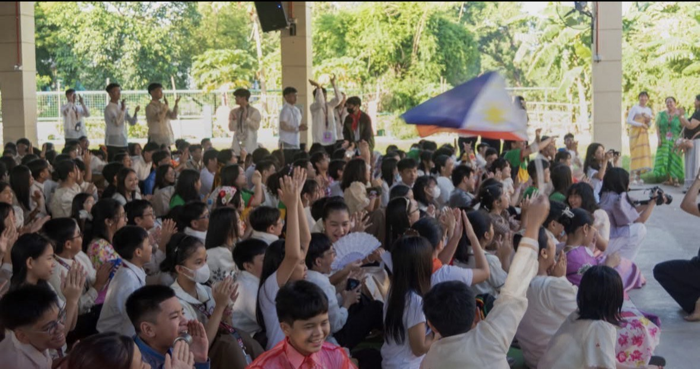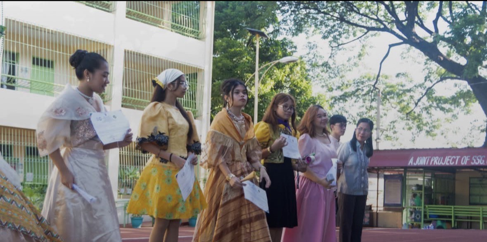
INTRAMS: During intrams, the most important thing I learned there is sportsmanship and staying healthy by doing extra curricular activity. I can apply them when playing sports with other people, showing them respect even if I don’t win. I didn’t really participate a lot but I did join the opening of intrams by dancing Palarong Pambansa and supporting our muse and escort in the red team! If I were to teach this to my classmates, I would first explain how intrams work, the different sports, and how to do proper etiquette when playing sports. It is important to have intrams to learn about being a good sport to other people and how to stay physically healthy through doing sports and physical activity.
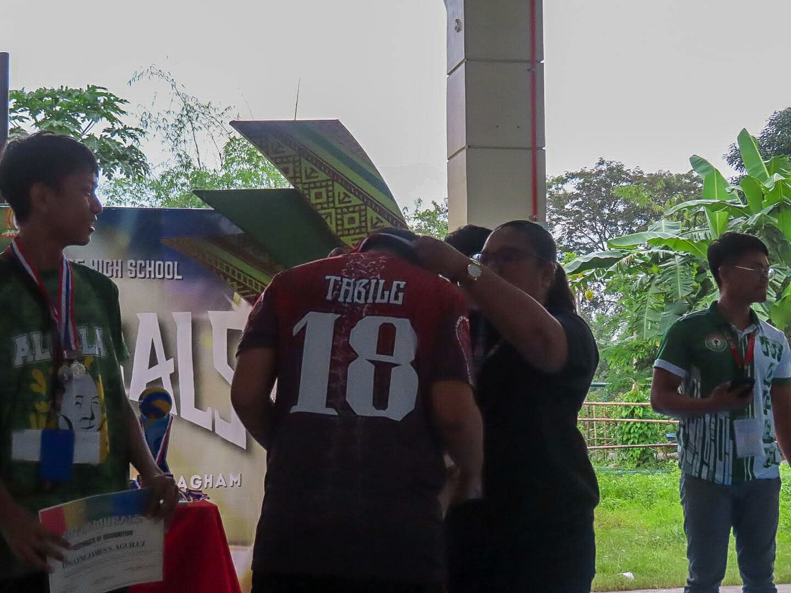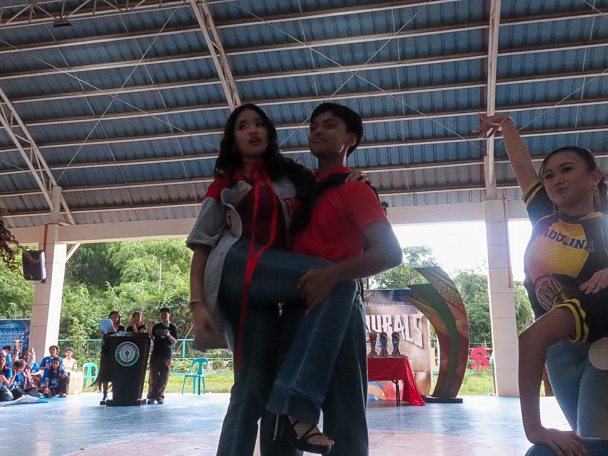
SCIENCE MONTH: The most important thing I learned from the event is problem-solving, innovating, being creative and being curious. I can use this in my real life by understanding climate, environment, and technology, inspiring different careers related to science like medicine, engineering and environmental science jobs. I actively participated in this event by joining the AGHAMAZING, an event where we make a research proposal and presentation in just 3 hours and then defend it. In the end, we won 3rd place! If I were to teach my classmate about science, I would say that learning science helps us see how it affects everything, from the food we eat to the phones we are using right now. Science isn’t just about doing experiments, but it's also about critical thinking and problem solving. It is important to have the science month event to promote curiosity and encourage students to explore more scientific concepts rather than just listening to discussions. It also highlights the role of science when solving real-world problems.
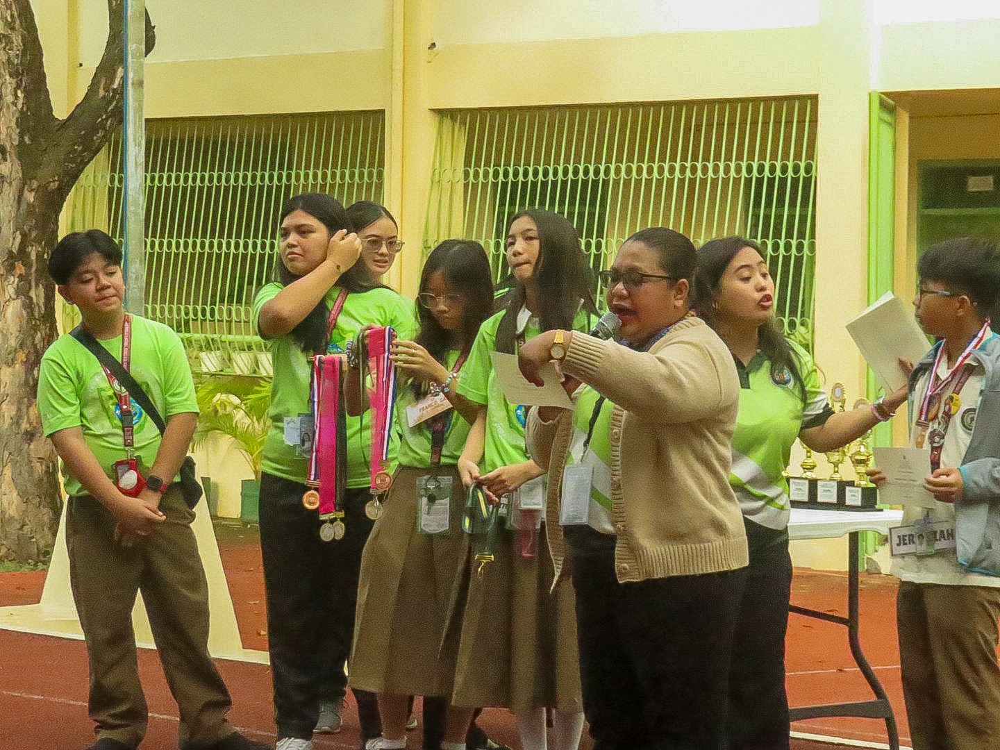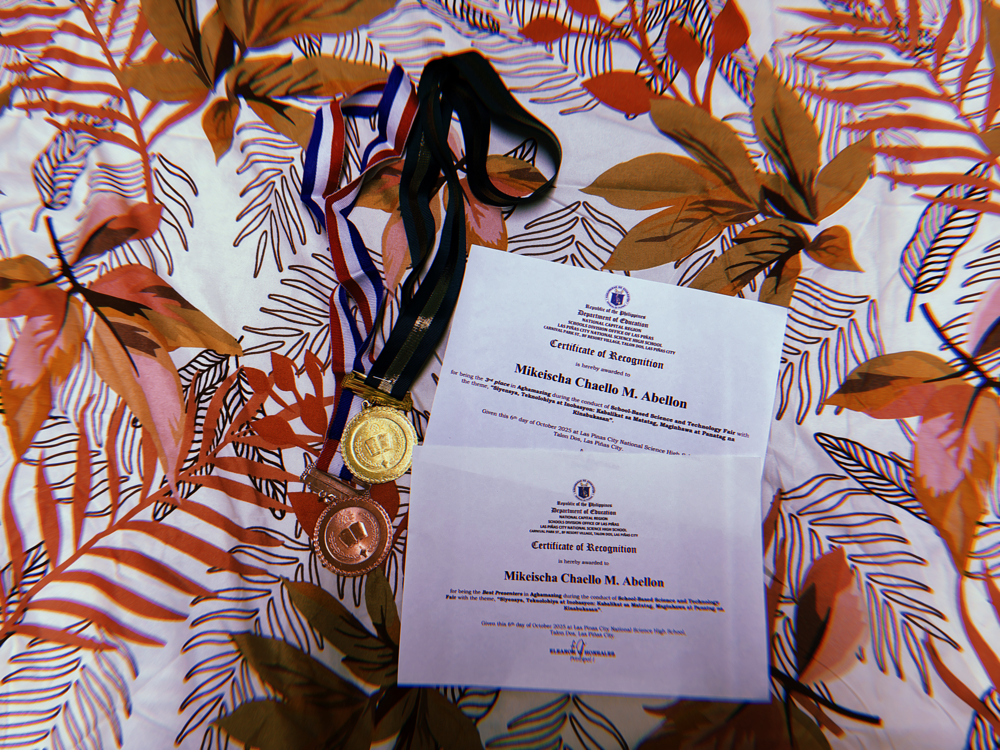
AP MONTH: During AP Month, I learned the importance of embracing Filipino heritage. Understanding our rights, responsibilities, and roles as a Filipino. I can use what I learned by appreciating our culture, promote social justice and participate in community projects that enhance ourselves to be more “makabayan”. I participated in the event by dressing in Filipiniana to show off our unique clothing and did quiz bee eliminations. I would teach my classmate that AP month reminds us that we should be responsible citizens, not to our countries but to other countries, showing respect for one another. It is important to have AP month to build awareness of history and culture not just in the Philippines but to other countries. It encourages us to have respect for diversity and national identity. It also helps students understand social issues.
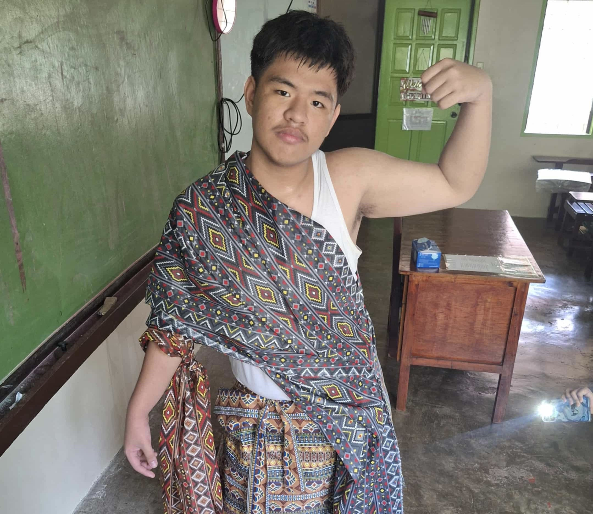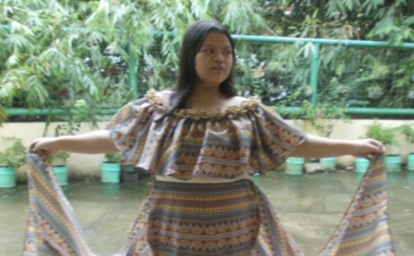
TEACHER’S DAY: When doing the teacher’s day project, I realized that teachers aren’t just there to teach, they are there as your second parent and your guidance. We should appreciate them for all the things they have done, they always work hard even if they’re tired. I can apply what I learn by helping the teachers if they need help and always respect them. I would tell my classmates that Teacher’s day is a chance to thank those who guide us not just in academics but life. It is important to have teachers day to honor our teachers, recognizing their impact to our school and show appreciation
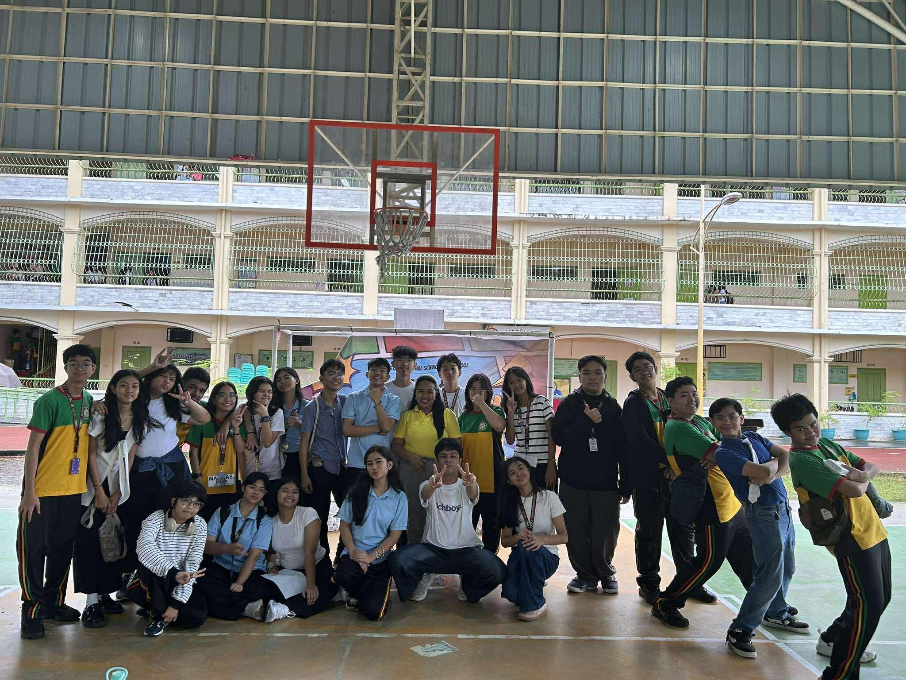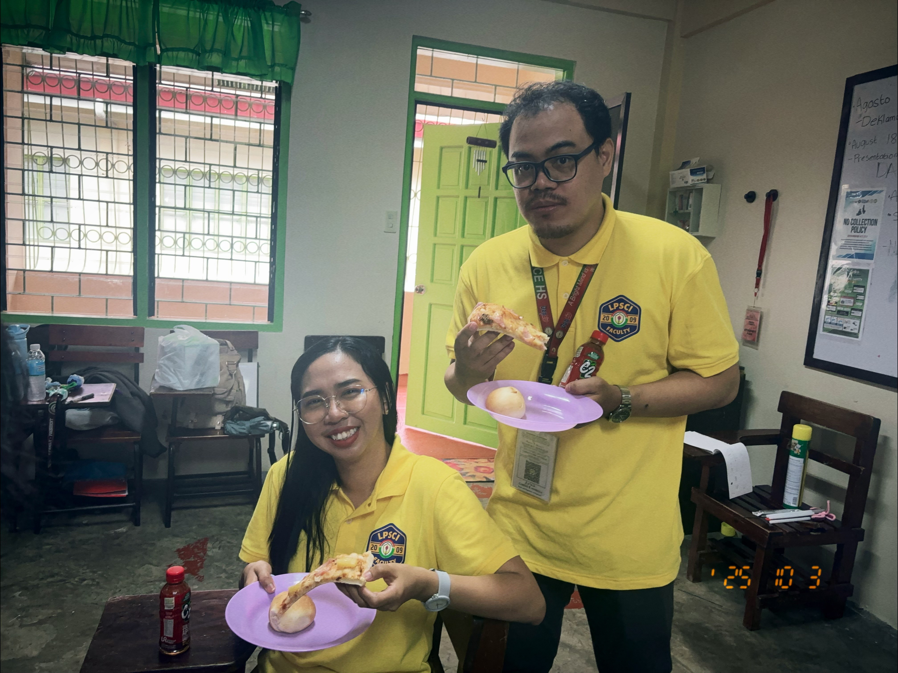
CLUSTER MEET: When watching cluster meets, I learned that different schools joined, promoting teamwork, physical health and discipline by being a good sport. In real life, I can teach other people about how they showed perseverance and collaboration. I didn’t really participate in the event since I was not part of varsity but I took photos of them, emphasizing the play and how they work together to win for their team while maintaining sportsmanship. I would tell my classmate “Sports Cluster isn’t just about winning or competing, but it’s about cooperation and pushing yourselves. These skills can be used in not only sport related activities but they can be used for future career” Cluster meet is important to show respect for other schools through sports.
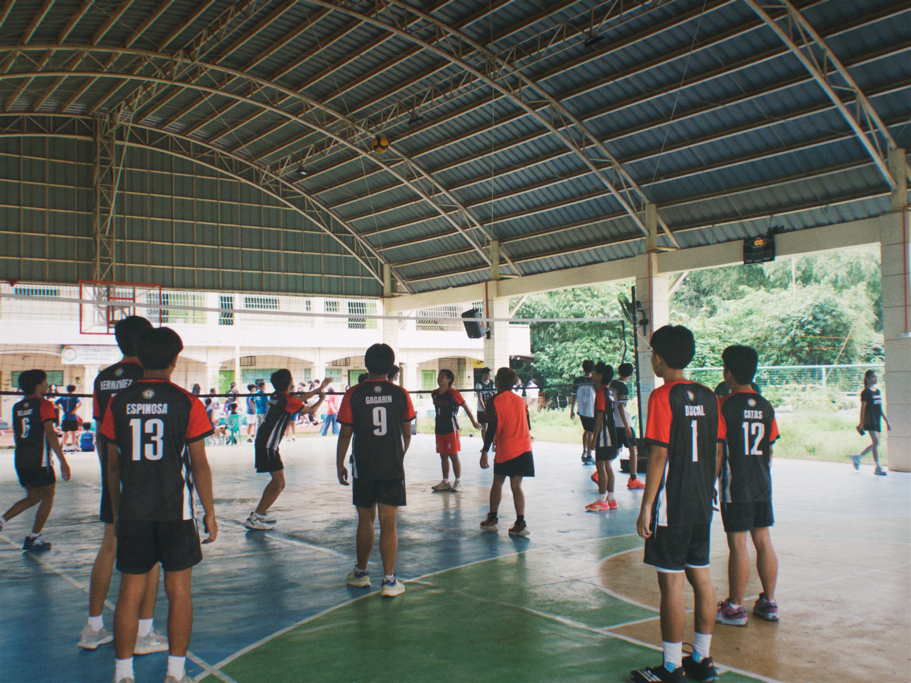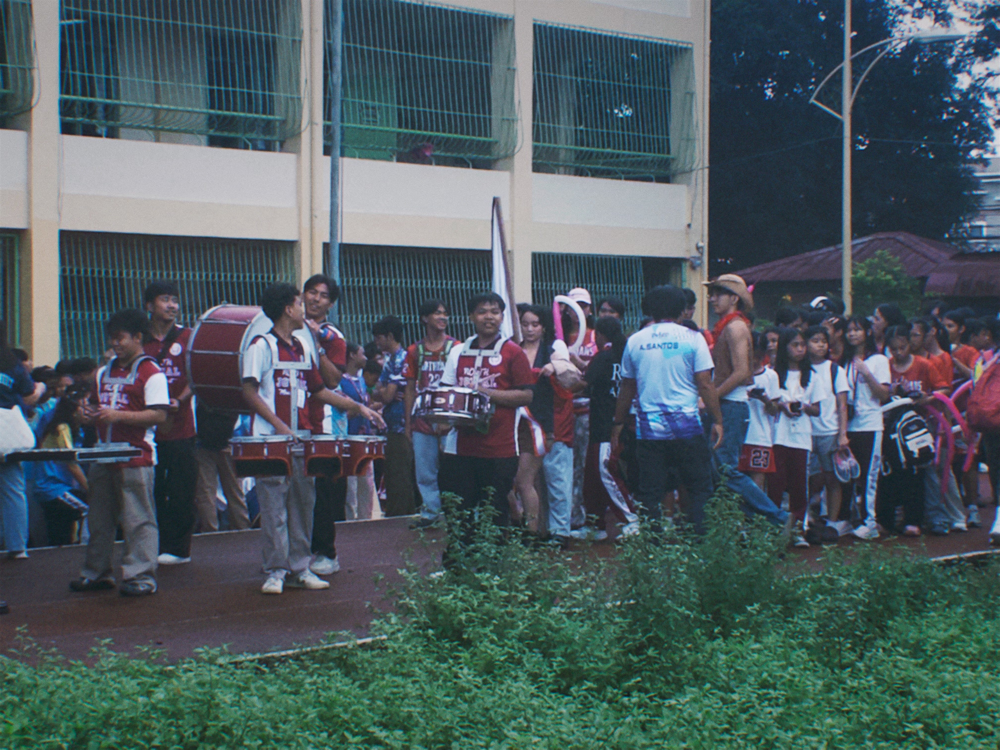
Videos
← Back to homepage